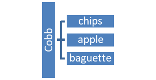
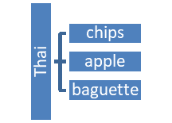
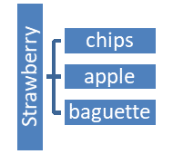
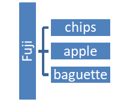

Unit 2 Probability
3.1 Basic Concepts of Probability and Counting
Basic Probability
Calculating the Probability of an Event
\(P(E)=\frac{\# \text { of Possible Successes}}{\text {Total } \# \text { of Possible Outcomes}}=\frac{n(E)}{n(S)}\)
- In a bag, you have
- 4 blue chips numbered 1, 2, 3, & 4
- 3 red chips numbered 1, 2, & 3
- 2 green chips numbered 1 & 2

You randomly select one chip from the bag. Find:
Event Theoretical
ProbabilityExperimental
ProbabilityP(B) n(E)=n(Blue)=4
n(S)=n(Chips)=9\(\frac{4}{9}=.444=44.4 \%\)
P(R) \(\frac{3}{9}=.333=33.3 \%\)
P(G) \(\frac{2}{9}=.222=22.2 \%\)
P(4) \(\frac{1}{9}=.111=11.1 \%\)
P(3) \(\frac{2}{9}=.222=22.2 \%\)
P(\(\overline{B}\)) = P(not blue) \(\frac{5}{9}=.556=55.6 \%\)
P(\(\overline{R}\)) \(\frac{6}{9}=.667=66.7 \%\)
P(\(\overline{G}\)) \(\frac{7}{9}=.778=77.8 \%\)
P(number less than 5) \(\frac{9}{9}=1=100 \%\)
P(5) \(\frac{0}{9}=0=0 \%\)
- \(P(A)+P(\overline{A})=1\)
- \(P(A)=1-P(\overline{A})\)
- \(P(\overline{A})=1-P(A)\)
- You roll a fair 6-sided die
- List the Sample Space:
\((S)=\{1,2,3,4,5,6\}\) \(n(S)=6\) - What is the probability of:
- rolling an odd number greater than 1?
\(P(E)=\frac{n(E)}{n(S)}\)
\(E=\{3,5\}\)
\(n(E)=2\)
\(P(E)=\frac26=\frac13\)
- not rolling an odd number greater than one?
This is a good example when to use the Rule of Complements. The problem above is the complement of this problem.
P(not rolling odd greater than 1) = 1 - P(rolling odd greater than 1) \(=1-\frac{2}{6}=\frac{4}{6}\)
\(=\{1,2,4,6\} ; n(E)=4\)
- rolling a value greater than 6?
\(\frac{0}{6} ; E=\{ \}\) impossible - rolling a value between 1 and 6, inclusive?
\(\frac{6}{6} ; E\{1,2,3,4,5,6\} \) certain
- rolling an odd number greater than 1?
- List the Sample Space:
- You are ordering salad at Panera. You will select between 4 salads as your entrée. The 4 salads are: Chicken Cobb with Avocado, Thai Chicken, Strawberry Poppyseed with Chicken, and Fuji Apple Chicken. You have three choices for side items: chips, apple or baguette. List the different outcomes for your sample space if your meal will consist of one salad and one side item.
Cobb Salad and Chips
Cobb Salad and Apple
Cobb Salad and Baguette

Thai Salad and Chips
Thai Salad and Apple
Thai Salad and Baguette

Strawberry Salad and Chips
Strawberry Salad and Apple
Strawberry Salad and Baguette

Fuji Salad and Chips
Fuji Salad and Apple
Fuji Salad and Baguette

- How many possible outcomes do we have in our sample space?
\(n(S)=4 \times 3=12\) 4 salads, 3 sides - You decide to add a drink. Your choices are: Coke, Diet Coke, Sprite, Sweet Tea and UnSweet Tea. Now how many outcomes are in your sample space?
\(n(S)=4 \times 3 \times 5=60\) 4 salads, 3 sides, 5 drinks
Fundamental Counting Principle:
For a sequence of two events in which the first event can occur in m ways and the second event can occur in n ways, the events together can occur in m*n ways. This rule can be extended to any number of events occurring in sequence.
- You are choosing an outfit to wear to school. You have 10 shirts, 5 pairs of pants, and 3 pairs of shoes. How many outfits can you make?
\(10 \times 5 \times 3=150\) outfits
- An access code consists of six characters. For each character, any letter or number can be used, with the exceptions that the first character cannot be 0, and the last two characters must be odd numbers.
\(35 \times 36 \times 36 \times 36 \times 5 \times 5=40824000\)
- What is the probability of randomly selecting the correct access code on the first try?
\(1 / 40824000=0.000000245\) - How many possible outcomes do we have in our sample space?
Complements Rule
What do you notice about P(\(B\)) and P(\(\overline{B}\))?
What do you notice about P(\(R\)) and P(\(\overline{R}\))?
Probability Rules for Complements
Some Special Probabilities
Impossible Event:
Certain Event:
Unusual Event: